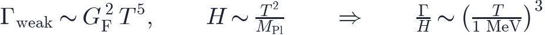
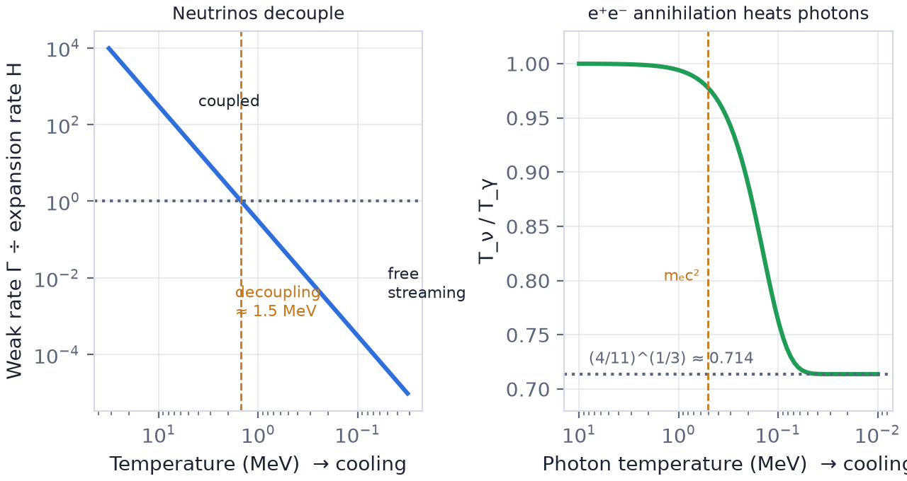
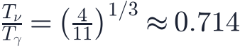
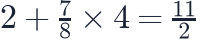
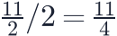
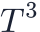
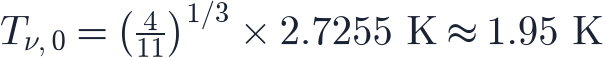
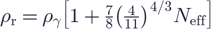

In this lesson you will learn
|
Ghost particles
Neutrinos are elementary particles with no electric charge and a tiny mass. They feel only gravity and the weak nuclear force, so they hardly interact with anything: about 60 billion neutrinos from the Sun pass through every square centimetre of your body each second, and almost none of them is stopped. They come in three flavours: electron, muon and tau neutrinos, each with its antiparticle.
In the hot early universe, however, matter was so dense and hot that even neutrinos were constantly created, scattered and absorbed. They were part of the cosmic soup, sharing the same temperature as photons, electrons and positrons.
Decoupling: when the weak force became too weak
A reaction keeps particles in thermal equilibrium only while it happens faster than the universe expands (lesson L4.2). For neutrinos the relevant reactions, such as , have a rate that drops steeply with temperature, while the expansion rate falls more slowly:

Here is the Fermi constant, which sets the strength of the weak
force, and  is the Planck mass.
is the Planck mass.

One second after the Big Bang The ratio drops below one at about 1–2 MeV ( K), roughly one second after the Big Bang. From then on neutrinos decoupled: they stopped interacting and have streamed freely through the universe ever since. This is the neutrino version of the photon decoupling that produced the CMB 380 000 years later. |
After decoupling, the neutrinos kept their thermal energy distribution. Expansion stretched their momenta just like photon wavelengths, so their temperature continued to fall as .
Why neutrinos are colder than photons
Shortly after neutrino decoupling, the temperature dropped below the rest energy of electrons, MeV. Electrons and positrons then annihilated into photons: .
The energy (more precisely, the entropy) of the annihilating pairs went into the photons, which were still in equilibrium with the plasma. The neutrinos had already decoupled, so they received nothing. The photons were heated relative to the neutrinos.
Conservation of entropy gives the final temperature ratio exactly:

Where does 4/11 come from? Before annihilation, photons (2 polarisation states) and electrons plus positrons (4 states, each counting as 7/8 because they are fermions) shared the entropy:  units. Afterwards only the photons' 2 units remain. The photon entropy grew by a factor , and since entropy scales as , the photon temperature grew by relative to the neutrinos. |
With today's CMB temperature of 2.7255 K, the neutrino background has

Try it: BBN Abundance Explorer Set ΔN_eff = 1 in the BBN Abundance Explorer and see how much extra helium one more neutrino species would make. |
Try it: Interactive Cosmic Timeline Jump to "Neutrino decoupling" in the Interactive Cosmic Timeline and read the temperature and the size of the observable universe at that moment. |
Try it: Cosmology Calculator At any redshift the Cosmology Calculator shows the CMB temperature. Multiply by 0.714 to get the neutrino background temperature at that time. |
The cosmic neutrino background today
The cosmic neutrino background (CνB) is as universal as the CMB:
| Photons (CMB) | Neutrinos (CνB) | |
|---|---|---|
| Released | 380 000 years | 1 second |
| Temperature today | 2.73 K | 1.95 K |
| Number per cm³ | 411 | 336 (112 per flavour, including antineutrinos) |
Every cubic centimetre of space contains about 336 relic neutrinos. Yet their
energies are so low, about  eV, that no experiment has detected them
directly. Proposed experiments such as PTOLEMY aim to capture them on tritium, but
this remains extremely challenging.
eV, that no experiment has detected them
directly. Proposed experiments such as PTOLEMY aim to capture them on tritium, but
this remains extremely challenging.
Measuring the neutrinos anyway
Even without direct detection, cosmology "sees" the relic neutrinos through their gravity and their contribution to the expansion rate.
The effective number of neutrino species
Neutrinos were part of the radiation that controlled the expansion of the early
universe. Cosmologists express their energy density with the
effective number of neutrino species
 :
:

For the three known neutrinos the Standard Model predicts , slightly above 3 because decoupling was not perfectly instantaneous and neutrinos received a small share of the annihilation energy.
- Nucleosynthesis: more radiation means faster expansion, earlier freeze-out of neutrons and more helium (lesson L4.3). The observed helium abundance requires .
- The CMB: Planck measures , a clear detection of the neutrino background's effect on the early universe.
Cosmos uses N_eff The Planck 2018 preset in this app uses in the radiation density, the standard value at the time of the analysis. |
Neutrino masses
Neutrino oscillation experiments proved that neutrinos have mass: the sum of the three masses is at least about 0.06 eV. Today the relic neutrinos are so cold that at least two of the three types move slowly, behaving like a tiny amount of hot dark matter. Their mass slightly suppresses the growth of galaxy clusters and the cosmic web.
Cosmological observations therefore limit the total neutrino mass to roughly 0.1 eV or less, a tighter bound than any laboratory experiment. Pinning down this mass is a major goal of current galaxy surveys.
Remember this
|